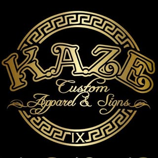

Estado actual
localhost:3000
Vista del sitio — versión actual
Sitio Next.js NUEVO
Animación de fondo tipo aurora — orbs de gradiente flotando en el hero. Stack moderno con componentes React separados.
Watsonville, CA · Desde 2014
Tu marca,
hecha realidad.
Letreros luminosos, uniformes personalizados y más — diseñados con precisión por un taller local.
Cotiza tu proyecto
Mockup gratis
+10 años

URLs activas
| URL | Uso | Estado |
|---|---|---|
localhost:3000 |
Next.js dev server ACTIVO | Principal |
127.0.0.1:4178 |
HTML estático — respaldo | Legado |
127.0.0.1:4177 |
Copia original Downloads | No usar |
Levantar el servidor
Next.js dev server:
cd "/c/Users/boxes/Documents/Kaze/kaze-web"
npm run dev
HTML legado (si se necesita):
$env:PORT='4178'
node kaze-site-local\server.js
Stack tecnológico implementado
Tecnologías
Next.js 16.2.6
App Router
TypeScript
Strict mode
Tailwind CSS
+ CSS custom props
Framer Motion
Animaciones
Lucide React
Iconos
i18n manual
ES / EN integrado
Schema.org
JSON-LD · GEO
Mobile-first
min-width breakpoints
Qué se hizo en esta sesión
Implementado ✓
1
Migración a Next.js 16
Proyecto creado en kaze-web/ con App Router, TypeScript y Tailwind. Build limpio sin errores.
2
12 componentes React
Navbar, Hero, Services, Process, Projects, About, History, Signs, Apparel, QuoteForm, ContactPanel, Footer — todos con soporte bilingüe y dark mode.
3
Aurora animated background
Hero con orbs de gradiente flotando en CSS puro — rojo, verde y dorado (brand colors). Grain texture overlay para textura. Sin librerías externas.
4
Schema.org JSON-LD (GEO)
LocalBusiness, dirección, horarios, servicios y aggregateRating en el <head>. Visible para ChatGPT, Perplexity y Google AI Overview.
5
Mobile-first implementado
Touch targets ≥48px, nav fullscreen overlay en mobile, hero orbs reducidos en mobile, formulario en columna única, FAB de WhatsApp ajustado.
Conceptos explicados esta sesión
GEO — Generative Engine Optimization IMPLEMENTADO
Optimización del sitio para ser encontrado y citado por motores de IA (ChatGPT, Perplexity, Google AI Overview). Se implementa con Schema.org JSON-LD estructurado, FAQs directas y copies orientados a "respuesta directa". Ya incluido en el layout de Next.js.
AI Photo Transformer PENDIENTE DECISIÓN
El usuario sube una foto → IA la convierte a estilo artístico (manga, 3D, acuarela, pop art) → resultado aparece sobre mockup de prenda → cliente lo usa como diseño de bordado/DTF. Requiere API de Replicate/fal.ai + storage (R2/S3) + ~1-2 semanas extra. Recomendado para v3.
Costo por transformación: ~$0.02–$0.08 USD · Estrategia: 2 gratuitas como lead magnet.
Animated Background moderno (2026)
Tendencia: orbs de gradiente con blur flotando lentamente + grain texture overlay. Implementado en el hero de KAZE con CSS puro — sin JS, sin librerías pesadas. Efecto aurora que complementa la estética neon/signs de la marca.
Estructura del proyecto
Archivos y directorios
| Ruta | Función | Estado |
|---|---|---|
kaze-web/ |
Proyecto Next.js 16 — sitio de producción NUEVO | Principal |
kaze-web/src/app/ |
App Router — layout, page, globals.css | ✓ |
kaze-web/src/components/ |
12 componentes React (Navbar, Hero, Services…) | ✓ |
kaze-web/src/lib/i18n.ts |
Traducciones ES/EN completas + función t(lang, key) | ✓ |
kaze-site-local/ |
HTML estático original — respaldo de referencia | Legado |
MEMORY.md |
Memoria viva — estado, reglas, decisiones y pendientes | Activo |
preferencias-diseno.md |
Inspiraciones visuales, preferencias #001–#007, roadmap UX | Activo |
copys/COPYS-001_website-kaze-designs.md |
Voz de marca, textos oficiales y meta tags SEO | Activo |
briefs/ |
Briefs de producción — hero video (Remotion), futuras piezas | Pendiente |
INFORME_PROYECTO_KAZE.html |
Este documento — historial de versiones del proyecto | v2.0 |
Git
3
aac963a
Informe HTML v1.0 + documentos de sesión.
2
85953ca
Documentación de memoria viva y README.
1
af56eed
Importación inicial del proyecto Kaze a Documents.
⚠️ El directorio kaze-web/ aún no está en un commit. Pendiente hacer commit de la migración Next.js.
Pendientes y decisiones
Qué falta decidir o hacer
Pendiente decisión
AI Photo Transformer — ¿lo incluimos en v3? Requiere cuenta Replicate/fal.ai, bucket S3/R2 y ~2 semanas. Se explicó el costo (~$0.02-$0.08/imagen) y la estrategia de 2 gratis como lead magnet.
Commit pendiente
Commit de Next.js migration — El directorio kaze-web/ existe pero aún no está en el historial Git. Hacer git add kaze-web/ && git commit.
Cuando esté listo
Deploy en Vercel — El proyecto Next.js está listo para subirse a Vercel (free tier). Requiere crear remote en GitHub primero.
Completado
Imágenes placeholders — Se reemplazaron las 16 fotos de Unsplash por imágenes 4K fotorrealistas generadas por IA.
V2 del sitio
Carrusel auto-scroll de proyectos + reviews — (Preferencia #005) Implementar el carrusel horizontal infinito con color filter y testimonios. La versión actual tiene grid estático.
Pendiente
Logo vectorial — Confirmar si existe versión .svg o .ai del logo KAZE para usar en lugar del .jpg actual.
Roadmap del proyecto
Fases del sitio
v1.0 — Completada
HTML Estático
Single page, bilingüe, dark mode, formulario, WhatsApp FAB
✓ Entregado
v2.0 — Actual
Next.js + Animaciones
Next.js 16, aurora hero, GEO/Schema.org, mobile-first, componentes React
🚀 En curso
v3 — Próxima
AI Photo Transformer
Carrusel infinito, transformación de foto con IA, mockup 2D con Canvas
⏳ Pendiente decisión
v4 — Futuro
Configurador 3D
Mockup 3D rotable (Three.js), cotizador automático, backend completo
⏳ Aspiracional